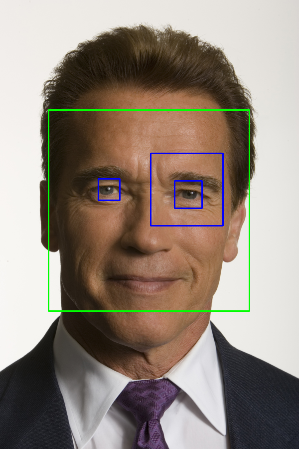

| Safe Haskell | None |
|---|---|
| Language | Haskell2010 |
OpenCV.ImgProc.CascadeClassifier
- data CascadeClassifier
- newCascadeClassifier :: FilePath -> IO (Maybe CascadeClassifier)
- cascadeClassifierDetectMultiScale :: IsSize size Int32 => CascadeClassifier -> Maybe Double -> Maybe Int32 -> Maybe (size Int32) -> Maybe (size Int32) -> Mat (S '[w, h]) (S 1) (S Word8) -> Vector (Rect Int32)
- cascadeClassifierDetectMultiScaleNC :: IsSize size Int32 => CascadeClassifier -> Maybe Double -> Maybe Int32 -> Maybe (size Int32) -> Maybe (size Int32) -> Mat (S '[w, h]) (S 1) (S Word8) -> Vector (Rect Int32, Int32, Double)
Documentation
data CascadeClassifier Source #
Instances
newCascadeClassifier :: FilePath -> IO (Maybe CascadeClassifier) Source #
Create a new cascade classifier. Returns Nothing if the classifier
is empty after initialization. This usually means that the file could
not be loaded (e.g. it doesn't exist, is corrupt, etc.)
cascadeClassifierDetectMultiScale Source #
Arguments
| :: IsSize size Int32 | |
| => CascadeClassifier | |
| -> Maybe Double | Scale factor, default is 1.1 |
| -> Maybe Int32 | Min neighbours, default 3 |
| -> Maybe (size Int32) | Minimum size. Default: no minimum. |
| -> Maybe (size Int32) | Maximum size. Default: no maximum. |
| -> Mat (S '[w, h]) (S 1) (S Word8) | |
| -> Vector (Rect Int32) |
Example:
cascadeClassifierArnold
:: forall (width :: Nat)
(height :: Nat)
(channels :: Nat)
(depth :: * )
. (Mat (ShapeT [height, width]) ('S channels) ('S depth) ~ Arnold_small)
=> IO (Mat (ShapeT [height, width]) ('S channels) ('S depth))
cascadeClassifierArnold = do
-- Create two classifiers from data files.
Just ccFrontal <- newCascadeClassifier "data/haarcascade_frontalface_default.xml"
Just ccEyes <- newCascadeClassifier "data/haarcascade_eye.xml"
-- Detect some features.
let eyes = ccDetectMultiscale ccEyes arnoldGray
faces = ccDetectMultiscale ccFrontal arnoldGray
-- Draw the result.
pure $ exceptError $
withMatM (Proxy :: Proxy [height, width])
(Proxy :: Proxy channels)
(Proxy :: Proxy depth)
white $ imgM -> do
void $ matCopyToM imgM (V2 0 0) arnold_small Nothing
forM_ eyes $ eyeRect -> lift $ rectangle imgM eyeRect blue 2 LineType_8 0
forM_ faces $ faceRect -> lift $ rectangle imgM faceRect green 2 LineType_8 0
where
arnoldGray = exceptError $ cvtColor bgr gray arnold_small
ccDetectMultiscale cc = cascadeClassifierDetectMultiScale cc Nothing Nothing minSize maxSize
minSize = Nothing :: Maybe (V2 Int32)
maxSize = Nothing :: Maybe (V2 Int32)

cascadeClassifierDetectMultiScaleNC Source #
Arguments
| :: IsSize size Int32 | |
| => CascadeClassifier | |
| -> Maybe Double | Scale factor, default is 1.1 |
| -> Maybe Int32 | Min neighbours, default 3 |
| -> Maybe (size Int32) | Minimum size. Default: no minimum. |
| -> Maybe (size Int32) | Maximum size. Default: no maximum. |
| -> Mat (S '[w, h]) (S 1) (S Word8) | |
| -> Vector (Rect Int32, Int32, Double) |
Special version which returns bounding rectangle, rejectLevels, and levelWeights